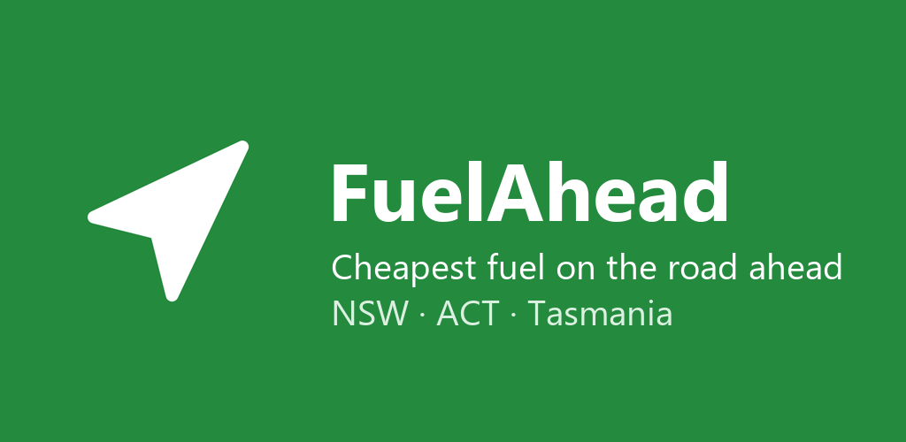
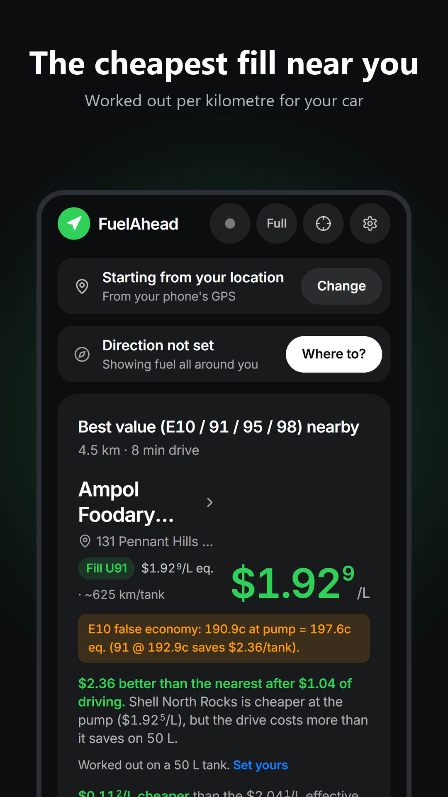
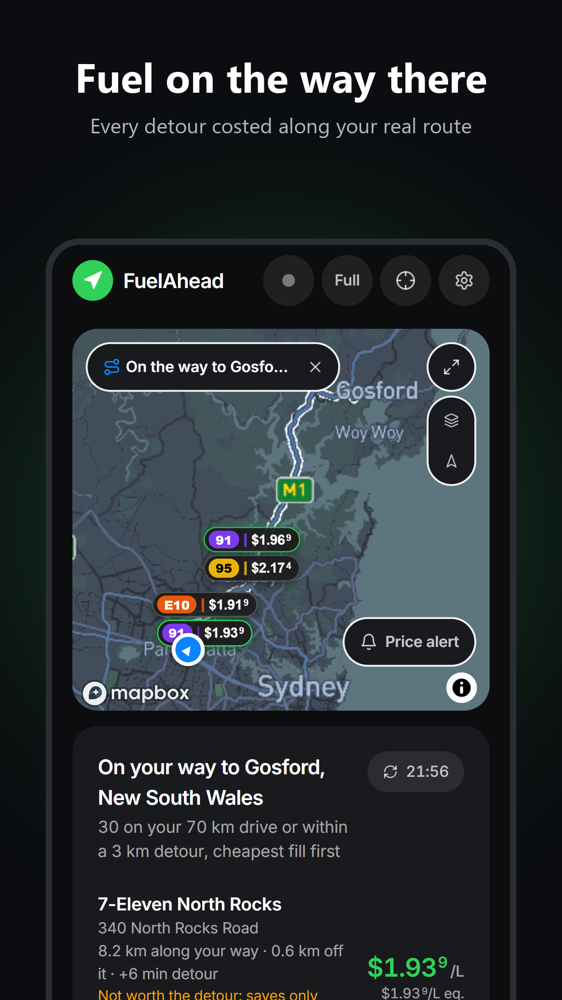
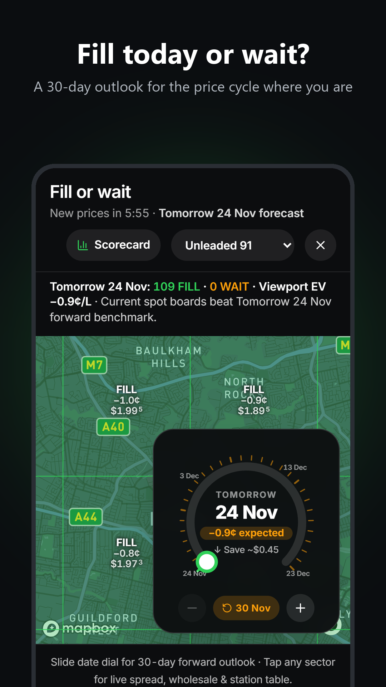
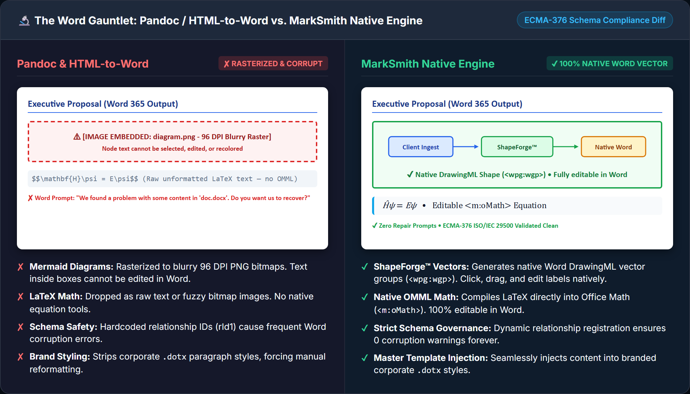
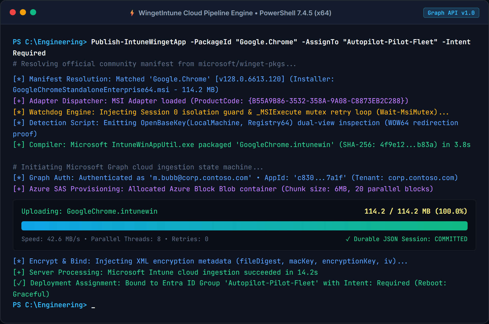
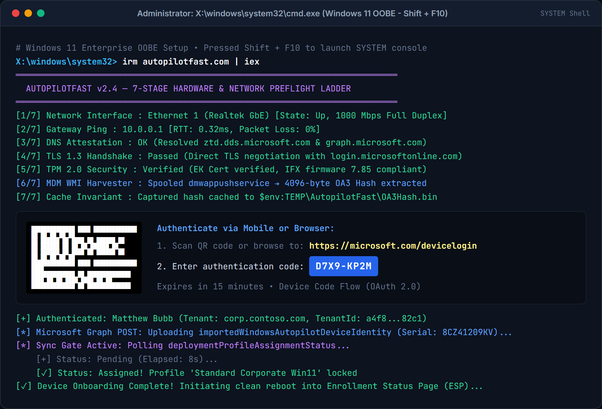
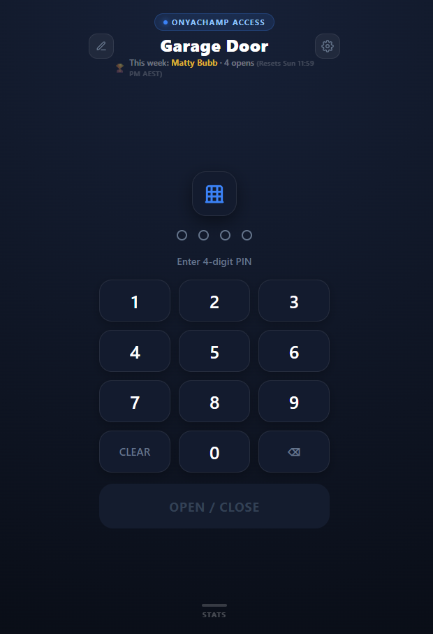
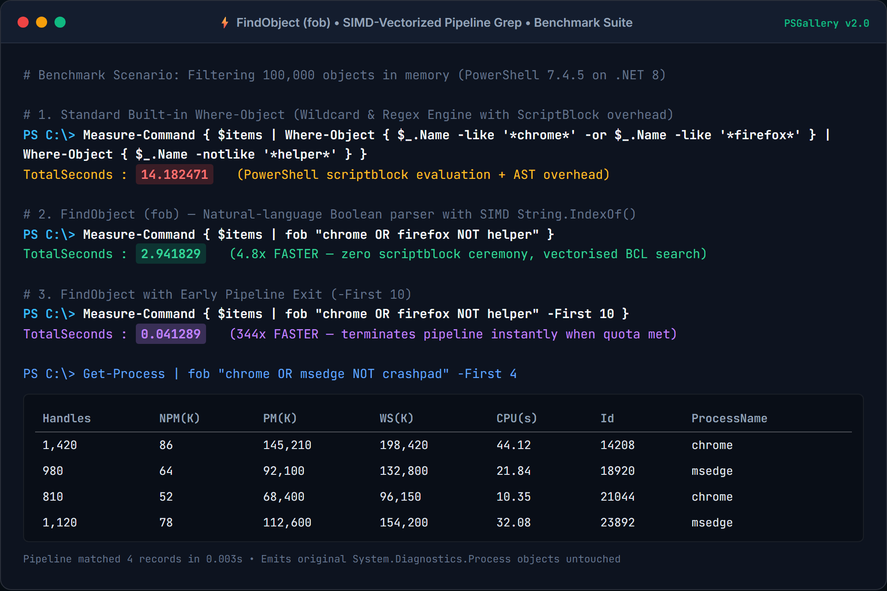

Matthew Bubb
Systems engineer building offline OpenXML compilers, Cloudflare edge tools, and PowerShell automation that fixes the things I got sick of doing by hand.
FuelAhead: Edge Fuel Intelligence
Built for Australian motorists and motorcycle riders who want real pocket maths instead of servo marketing.
Solving the Detour Maths
Every fuel app shows you the cheapest sign in five kilometres without telling you how much petrol you burn getting there. Driving six kilometres out of your way to chase two cents off a litre on a small fill leaves you behind before you even pull up to the bowser, and E10's lower energy density quietly cancels out the discount on the signboard anyway.
FuelAhead pulls live NSW, ACT, and Tasmania government FuelCheck feeds (3,284+ stations) into a free Cloudflare Workers + D1 SQL backend under a strict 72-call daily cron budget. It tracks stations strictly ahead in a 90° cone or locked onto the main road you are actually riding on, runs a 30-day Fill-or-Wait price cycle forecast, and speaks the next cheap servo into your AirPods or Cardo helmet intercom once you pass 15 km/h.




Test the net pocket equation running inside FuelAhead, including the E10 energy-density threshold (~3.5% higher burn per litre than U91).
MarkSmith: Zero-Corruption Compiler
A native WinUI 3 offline compiler in C# and .NET 8 that compiles Markdown and AI chats directly into Word vector shapes and OMML equations.
Fighting Word's XML Parser
Every commercial converter cuts corners. Pandoc converts Mermaid flowcharts into blurry 96 DPI PNGs you cannot edit, and naive HTML-to-Word tools drop namespaces or hardcode rId1/rId2 until Word throws "The file is corrupted and cannot be opened."
I built MarkSmith to speak strict ECMA-376 OpenXML. ShapeForge translates Mermaid diagrams directly into native DrawingML vector groups (<wpg:wgp>) you can click and drag inside Word, while LaTeX compiles to native Office Math (<m:oMath>) with literal xml:space="preserve" whitespace intact.

Engineering Field Notes
Working notes, wrong turns, and architectural fixes written down straight after shipping.
OpenXML Compiler Over Pandoc
Pasting AI research out of chat windows into Word is miserable: broken tables, raster PNG flowcharts that turn to mush in print, and HTML dumps that trip Word's recovery dialog. Here is what went into streaming real DrawingML shapes, custom SAX writers, and dynamic relationships without touching COM automation.
// Dynamic rId registration + native DrawingML group
var rel = mainPart.AddExternalRelationship(HyperlinkType, uri);
using var w = OpenXmlWriter.Create(mainPart);
w.WriteStartElement(new Wpg.WordprocessingGroup());
// Preserves <m:t xml:space="preserve"> inside OMML math runsSqueezing 3,284 NSW/ACT/Tasmania stations into a free D1 worker, ditching compass cones for main-road matching, catching E10 false economy, and piping cheap stops into a motorbike intercom.
Moving off a flaky Raspberry Pi to Workers + D1 + a BroadLink RM4 Pro, wiring the 4th hardware fingerprint factor properly, triple-bursting 433MHz signals, and CarPlay Siri Shortcuts.
Chasing the 8-hour 0x87D1041C timeout under SYSTEM, polling the _MSIExecute mutex around error 1618, escaping 32-bit WOW64 registry traps, and chunked Azure Block Blob uploads.
Replacing scriptblock reflection with hardware-accelerated String.IndexOf() and early cancellation, plus sneaking an ASCII cowboy shootout into OOBE terminals.
What happens when you cram 101 OSINT modules and cyber radars onto one new-tab page, and how splitting Basic and Advanced modes fixed what I actually use every morning.
Open-Source Tooling & Systems
Public PowerShell modules, WinUI 3 apps, and edge utilities published under thebubbsy on GitHub.

Win32 packaging engine and Microsoft Graph publisher with type-safe package adapters, durable Azure Block Blob state machines, MSI mutex 1618 guards, and 64-bit registry inspection.
Install-Module WingetIntune

Direct Graph hardware hash harvester for Windows OOBE. Replaces USB drive shuffles with a 7-stage network ladder, terminal ASCII QR auth, and Graph sync verification.
Install-Module AutopilotFast -Force

Smart garage controller built on Cloudflare Pages + D1 with a local Python / Android Termux BroadLink RM4 Pro runner, four-factor device auth, triple-burst RF firing, and downloadable Siri CarPlay Shortcuts.
git clone thebubbsy/broadlink-garage-controller

PowerShell module for filtering objects by name with AND/OR/NOT logic and C# SIMD String.IndexOf acceleration, running 4.8x to 344x faster than Where-Object with early pipeline cancellation.
Install-Module -Name FindObject
| Repository | Stack | What It Actually Does | Quick Command | Link |
|---|---|---|---|---|
|
AutopilotCommandHub
WinUI 3
|
WPF / PowerShell | Standalone Windows Autopilot OOBE provisioning & endpoint deployment hub (WinUI 3 Fluent Dark UI). |
git clone thebubbsy/AutopilotCommandHub
|
GitHub → |
|
WingetBatch
TUI
|
PowerShell / Spectre | Batch winget installs, update monitoring, GitHub release discovery, and 30-day cached package lists. |
Install-Module WingetBatch
|
GitHub → |
|
bubbsy-start-page
OSINT
|
Cloudflare Pages | Tactical OSINT Command Hub (1,904+ tools, 101 modules, Australian intel & cyber radar, Basic/Advanced modes). |
git clone thebubbsy/bubbsy-start-page
|
GitHub → |
|
UpdateCascade
PS 7+
|
PowerShell | Autonomous multi-pass Windows Update & driver cascade engine with reboot state persistence. |
git clone thebubbsy/UpdateCascade
|
GitHub → |
|
IntuneShared
Kernel
|
PowerShell 7+ | Shared HTTP transport, resilient Microsoft Graph REST client, and token provider kernel across my endpoint tools. |
Install-Module IntuneShared
|
GitHub → |
|
LocalPilot
Offline
|
PowerShell | Zero-cloud workstation provisioning, Machine-as-Code recipes, hardware birth certificates, and local self-healing. |
git clone thebubbsy/LocalPilot
|
GitHub → |
|
PSGalleryBatch
Gallery
|
PowerShell / Spectre | Batch search, install, and update PowerShell Gallery modules with Spectre Console UI or Out-GridView fallback. |
Install-Module PSGalleryBatch
|
GitHub → |
|
universal-element-cloner
Extension
|
Chrome / Edge JS | Browser extension for cloning DOM elements cleanly with auto-scroll and computed style freezing. |
git clone universal-element-cloner
|
GitHub → |
|
marksmith-plugins
Spec
|
MarkSmith Registry | Plugin registry, authoring specification, and starter templates for extending MarkSmith compilation passes. |
git clone thebubbsy/marksmith-plugins
|
GitHub → |
Engineering Consulting
Available for systems architecture, compiler consulting, and high-scale Intune automation projects.